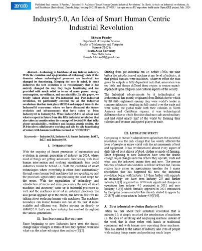
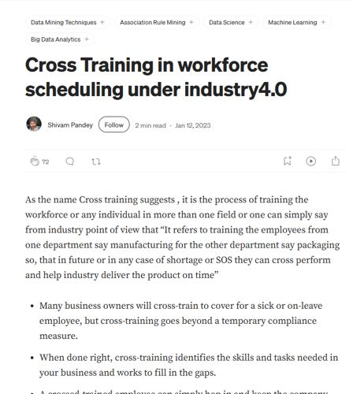
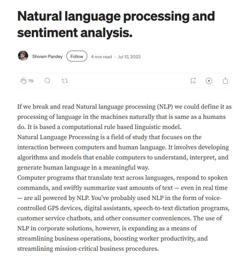
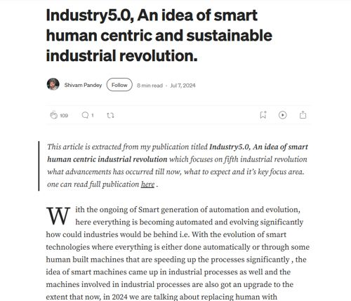
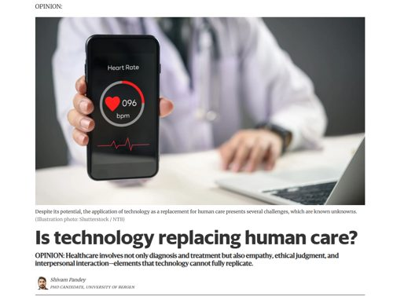
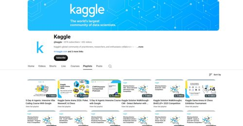
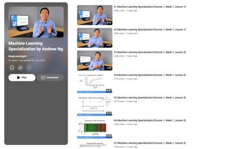
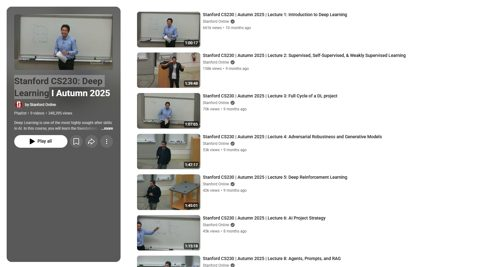
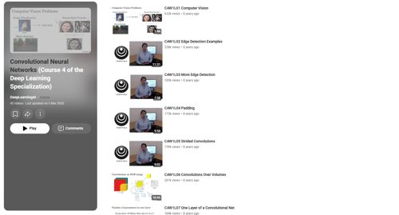
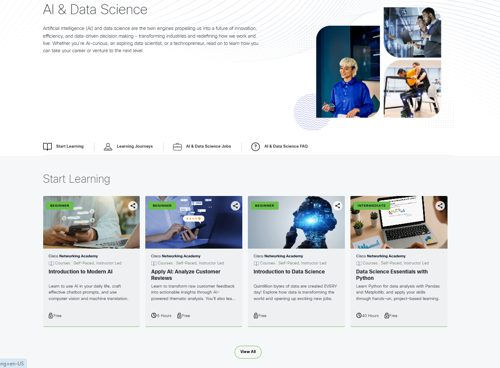

Publications & articles
Research and writing — each links out to where it actually lives.

Industry 5.0: An Idea of Smart, Human-Centric Industrial Revolution ↗
A look at Industry 5.0 as it builds on Industry 4.0 — human-centric, sustainable industrial evolution, IoT, and collaborative robots ("cobots") working alongside a human workforce.
Blog articles

Cross-Training in Workforce Scheduling Under Industry 4.0 ↗
Why cross-training a workforce is a strategic advantage under Industry 4.0, not just a stopgap for covering absences.

Natural Language Processing and Sentiment Analysis ↗
An introduction to NLP — how machines are taught to interpret, understand, and generate human language.

Industry 5.0: An Idea of Smart, Human-Centric and Sustainable Industrial Revolution ↗
A companion piece to the published paper, walking through the ideas behind a smart, human-centric, and sustainable industrial revolution.
Opinion pieces

Is Technology Replacing Human Care? ↗
Healthcare involves more than diagnosis and treatment — empathy, ethical judgment, and interpersonal interaction are elements technology cannot fully replicate.
More articles will be added soon.
Connected projects
Marginal — academic writing assistant
A Grammarly-style writing assistant for academic tone, combining LanguageTool's grammar checking with Claude for tone suggestions, styled as a scholarly manuscript with a margin-notes panel.
Learning — Playlists

5-Day AI Agents: Vibe Coding Course with Google ↗
An intensive, hands-on course on building AI agents through "vibe coding" with Google.

Machine Learning Specialization by Andrew Ng ↗
A foundational course covering supervised and unsupervised learning, from regression and classification to clustering.

Stanford CS230: Deep Learning ↗
Foundations of deep learning, from full-cycle DL projects to adversarial robustness, reinforcement learning, and agents.

Convolutional Neural Networks ↗
Covers computer vision fundamentals — edge detection, padding, strided convolutions, and building CNNs from scratch.
Learning — Courses

AI & Data Science ↗
A learning path covering AI fundamentals, applied AI, and data science essentials with Python.
More playlists and courses will be added soon.